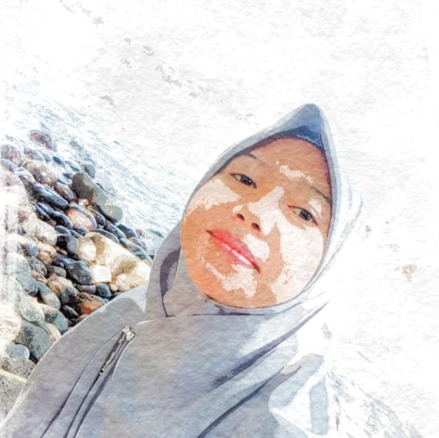

Eva Siti Nurjanah
Student | Content Creator
Assalamualaikum temen-temen. Nama lengkapku Eva Siti Nurjanah, biasa dipanggil Eva. Aku sangat senang dengan hal-hal baru dan menyukai tantangan. Aku merupakan orang biasa dengan sejuta rasa ingin tahu tentang banyak hal. Tidak terlalu sering membaca buku, yaa mungkin karena itu aku tidak terlalu pandai merangkai kata-kata dengan beragam kosakata.
Aku mudah menyesuaikan dengan lingkungan baru dan dapat menerima perubahan. Senang mengunjungi tempat-tempat baru dan menjelajah ke manapun asalkan kondisiku mendukung untuk itu. Aku melihat dunia ini lebih luas setelah beranjak dari kampung halamanku untuk mendapatkan pengalaman dan pandangan hidup yang berbeda.
Info Pribadi
Keterampilan
Aktivitas
Pendidikan
Info:
Nama : Eva Siti Nurjanah
TTL : Cianjur, 03 Oktober 1997
Alamat : Cianjur.
Keterampilan:
-Berharap
-Menunggu
-Bersabar
Aktivitas:
-Rebahan
-Mendengarkan Musik
-Bikin Konten Iseng
Pendidikan:
-SDN Mande 3 Cianjur
-SMPN 1 Mande Cianjur
-SMKN 1 Karangtengah Cianjur